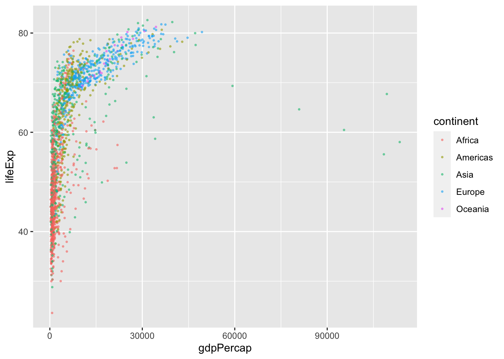
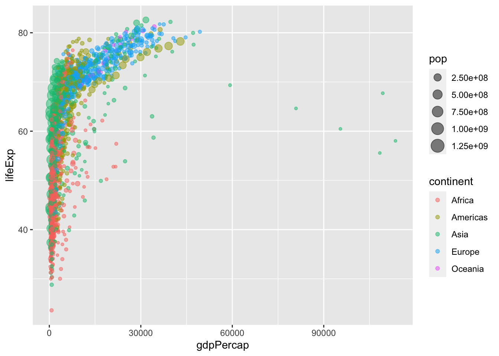
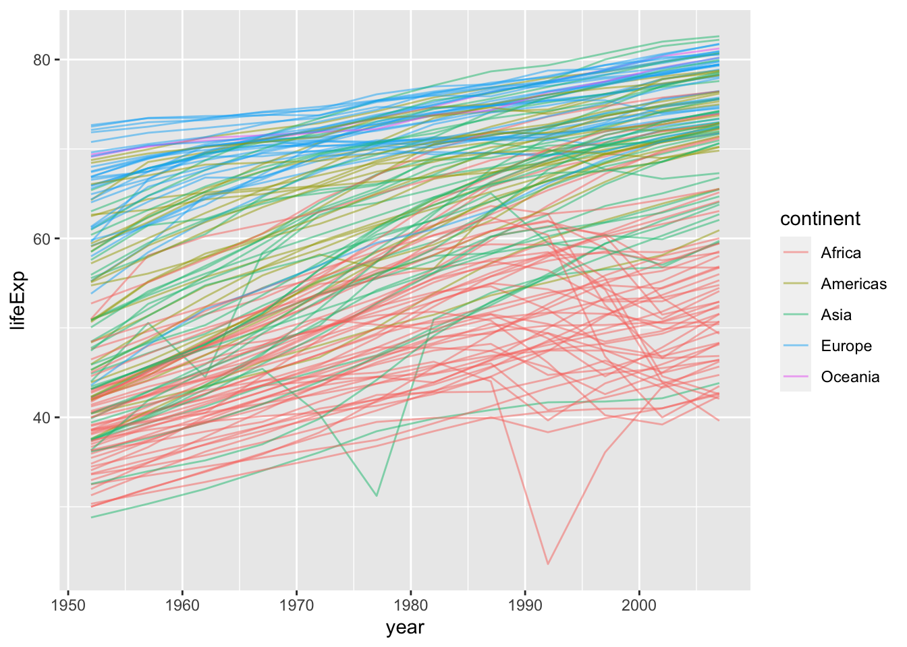

An interactive Jupyter Notebook version of this tutorial can be found at https://github.com/rlbarter/ggplot2-thw. Feel free to download it and use for your own learning or teaching adventures!
Useful resources for learning ggplot2
- ggplot2 book (https://www.amazon.com/dp/0387981403/ref=cm_sw_su_dp?tag=ggplot2-20) by Hadley Wickham
- The layered grammar of graphics (http://vita.had.co.nz/papers/layered-grammar.pdf) by Hadley Wickham
Materials outline
I will begin by providing an overview of the layered grammar of graphics upon which ggplot2 is built. I will then teach ggplot2 by layering examples on top of one another. Finally, I will introduce some advanced topics such as faceting and themes
Layered grammar of graphics
Basic ggplot2 plot types
Scales, axes, legends and positioning
Faceting
Themes: deviating from the defaults to produce beautiful graphics
By the end of this tutorial, you will be able to produce beautiful graphics such as this:
The layered grammar of graphics
Hadley Wickham built ggplot2 based on a set of principles outlines in his layered grammar of graphics (inspired by Wilkinson’s original grammar of graphics). The basic idea is that a statistical graphic is a mapping from data to aesthetic attributes (such as colour, shape, and size) of geometric objects (such as points, lines, and bars).
We will use some of this terminology as we progress and discover that each piece of terminology corresponds to a type of object in ggplot2.
data: a data frame containing the variables that you want to visualize
geoms: geometric objects (circles, lines, text) that you will actually see
aesthetics: the mapping from the data to the geographic objects (e.g. by describing position, size, colour, etc)
Basic ggplot2
In this section, we are going to make our first plot. This plot will be based on the gapminder dataset that can be found here. Below, we show the first 6 rows of the gapminder dataset.
library(ggplot2)
# to download the data directly:
gapminder <- read.csv("https://raw.githubusercontent.com/swcarpentry/r-novice-gapminder/gh-pages/_episodes_rmd/data/gapminder-FiveYearData.csv")head(gapminder) country year pop continent lifeExp gdpPercap
1 Afghanistan 1952 8425333 Asia 28.801 779.4453
2 Afghanistan 1957 9240934 Asia 30.332 820.8530
3 Afghanistan 1962 10267083 Asia 31.997 853.1007
4 Afghanistan 1967 11537966 Asia 34.020 836.1971
5 Afghanistan 1972 13079460 Asia 36.088 739.9811
6 Afghanistan 1977 14880372 Asia 38.438 786.1134The first function we will use is ggplot(). This function allows us to define the data that we will be using to make the plot, as well as the aesthetic properties that will be mapped to the geometric objects. That is, we will tell ggplot which data (a data frame) we are interested in and how each of the variables in our dataset will be used (e.g. as an x or y coordinate, as a coloring variable or a size variable, etc).
Below, we define our first ggplot object using the ggplot function, with the gapminder dataset and the x and y aesthetics defined by the gdpPercap and lifeExp variables, respectively.
The output of this function is a grid with gdpPercap as the x-axis and lifeExp as the y-axis. However, we have not yet told ggplot what type of geometric object the data will be mapped to, so no data has been displayed.
ggplot(gapminder, aes(x = gdpPercap, y = lifeExp))
Aesthetic mapping to layers
Next, we will add a “geom” layer to our ggplot object. For example, we could add a points layer which would automatically adopt the aesthetic mapping described in the previous line of code.
# describe the base ggplot object and tell it what data we are interested in along with the aesthetic mapping
ggplot(gapminder, aes(x = gdpPercap, y = lifeExp)) +
# add a points layer on top
geom_point()
What we have done is map each country (row) in the data to a point in the space defined by the GDP and life expectancy value. The end result is an ugly blob of points. Fortunately, there are many things that we can do to make this blob of points prettier.
For example, we can change the transparency of all points by setting the alpha argument to a low value, changing the color of the points to be blue instead of black, and making the points smaller.
ggplot(gapminder, aes(x = gdpPercap, y = lifeExp)) +
geom_point(alpha = 0.5, col = "cornflowerblue", size = 0.5)
Note that the above argument changed the alpha value and color for all of the points at once.
One of the truly powerful features of ggplot2 is the ability to change these aesthetics based on the data itself. For example, perhaps we want to color each point by its continent. Instead of separating the data into five different subsets (based on the possible values of continent), and adding the different colored points separately, we can simply add all the points once and add an colour aesthetic map for continent.
Note that whenever we are using a variable from the data to describe an aesthetic property of a geom, this aesthetic property needs to be included in the aes() function.
unique(gapminder$continent)[1] "Asia" "Europe" "Africa" "Americas" "Oceania" ggplot(gapminder, aes(x = gdpPercap, y = lifeExp, color = continent)) +
geom_point(alpha = 0.5, size = 0.5)
We could also add aesthetic mappings for other features such as shape, size, transparency (alpha), and more! For example, changing the size based on population:
ggplot(gapminder, aes(x = gdpPercap, y = lifeExp, color = continent, size = pop)) +
geom_point(alpha = 0.5)
Types of layers
So far, we have only seen scatterplots (point geoms), however, there are many other geoms we could add, including:
lines
histograms
boxplots and violin plots
barplots
smoothed curves
ggplot(gapminder, aes(x = year, y = lifeExp, group = country, color = continent)) +
geom_line(alpha = 0.5)
ggplot(gapminder, aes(x = continent, y = lifeExp, fill = continent)) +
geom_boxplot()
ggplot(gapminder, aes(x = lifeExp)) +
geom_histogram(binwidth = 3)
ggplot(gapminder, aes(x = gdpPercap, y = lifeExp, size = pop)) +
geom_point(aes(color = continent), alpha = 0.5) +
geom_smooth(se = FALSE, method = "loess", color = "grey30")Warning: Using `size` aesthetic for lines was deprecated in ggplot2 3.4.0.
ℹ Please use `linewidth` instead.`geom_smooth()` using formula = 'y ~ x'Warning: The following aesthetics were dropped during statistical transformation: size
ℹ This can happen when ggplot fails to infer the correct grouping structure in
the data.
ℹ Did you forget to specify a `group` aesthetic or to convert a numerical
variable into a factor?
Scales
We are going to return to our original scatterplot example to discuss scales, legend and positioning.
To remind you, this scatterplot showed GDP per capita against life expectancy for each country colored by continent and sized by population.
To keep things simple, let’s filter to a single year.
library(dplyr)
gapminder_2007 <- gapminder %>% filter(year == 2007)ggplot(gapminder_2007, aes(x = gdpPercap, y = lifeExp, color = continent, size = pop)) +
geom_point(alpha = 0.5)
The scale of a plot describes the features of the space in which it is plotted. Arguably, it would be better to show gdpPercap on a logarithmic scale, rather than in its raw form. Fortunately, this is easy to do using a scale function, which can be considered another layer that transforms our plot.
ggplot(gapminder_2007, aes(x = gdpPercap, y = lifeExp, color = continent, size = pop)) +
geom_point(alpha = 0.5) +
scale_x_log10()
The default x- (and y-) axes scales are scale_x_continuous and scale_y_continuous, but other options include scale_x_sqrt and scale_x_reverse.
Each of these scale functions has many options including changing the limits, the breaks, etc. For example in the plot below, we manipulate the x-axis by providing arguments to our scale function of choice.
ggplot(gapminder_2007, aes(x = gdpPercap, y = lifeExp, color = continent, size = pop)) +
geom_point(alpha = 0.5) +
# clean the x-axis breaks
scale_x_log10(breaks = c(1, 10, 100, 1000, 10000),
limits = c(1, 120000))
Notice that we changed the name of the x-axis in the plot using the name argument. This could also be done using the labs function. As an example, below we add a title and change the name of the y-axis and legends using the labs function.
ggplot(gapminder_2007, aes(x = gdpPercap, y = lifeExp, color = continent, size = pop)) +
# add scatter points
geom_point(alpha = 0.5) +
# log-scale the x-axis
scale_x_log10() +
# change labels
labs(title = "GDP versus life expectancy in 2007",
x = "GDP per capita (log scale)",
y = "Life expectancy",
size = "Popoulation",
color = "Continent")
We could also manipulate the scale of the size variable. Below, we expand the range of sizes and clean up the variable name. Since the variable we provided for size is a continuous variable (pop) we use the scale_size_continuous argument.
ggplot(gapminder_2007, aes(x = gdpPercap, y = lifeExp, color = continent, size = pop)) +
# add scatter points
geom_point(alpha = 0.5) +
# log-scale the x-axis
scale_x_log10() +
# change labels
labs(title = "GDP versus life expectancy in 2007",
x = "GDP per capita (log scale)",
y = "Life expectancy",
size = "Popoulation (millions)",
color = "Continent") +
# change the size scale
scale_size(range = c(0.1, 10),
breaks = 1000000 * c(250, 500, 750, 1000, 1250),
labels = c("250", "500", "750", "1000", "1250")) 
Scales also exist for other aesthetic features such as fill, color, alpha, etc.
Faceting
Sometimes we want to be able to make multiple plots of the same thing across different categories. This can be achieved with minimal repetition using faceting.
In the example below, we will remake the plot above individually for each continent.
ggplot(gapminder_2007, aes(x = gdpPercap, y = lifeExp, color = continent, size = pop)) +
# add scatter points
geom_point(alpha = 0.5) +
# log-scale the x-axis
scale_x_log10() +
# change labels
labs(title = "GDP versus life expectancy in 2007",
x = "GDP per capita (log scale)",
y = "Life expectancy",
size = "Popoulation (millions)",
color = "Continent") +
# change the size scale
scale_size(range = c(0.1, 10),
breaks = 1000000 * c(250, 500, 750, 1000, 1250),
labels = c("250", "500", "750", "1000", "1250")) +
# add faceting
facet_wrap(~continent)
Themes: making even more beautiful figures with ggplot2
One of the first things I usually do when I make a ggplot is edit the default theme. I actually really don’t like the grey background, nor do I like having a grid unless it really helps with the plot interpretation.
One of the simplest themes is theme_classic, however there are several other themes to choose from. The ggthemes package offers many additional themes, but you could also make your own using the theme() function.
ggplot(gapminder_2007, aes(x = gdpPercap, y = lifeExp, color = continent, size = pop)) +
# add scatter points
geom_point(alpha = 0.5) +
# clean the axes names and breaks
scale_x_log10(breaks = c(1000, 10000),
limits = c(200, 120000)) +
# change labels
labs(title = "GDP versus life expectancy in 2007",
x = "GDP per capita (log scale)",
y = "Life expectancy",
size = "Popoulation (millions)",
color = "Continent") +
# change the size scale
scale_size(range = c(0.1, 10),
breaks = 1000000 * c(250, 500, 750, 1000, 1250),
labels = c("250", "500", "750", "1000", "1250")) +
# add a nicer theme
theme_classic(base_family = "Avenir")
As an example of further customization of the ggplot theme, below we do the following:
- move the legend to the top (set
legend.position = "top"intheme()) - removing the population legend (set
guide = "none"inscale_size()) - remove the axes lines (set
axis.line = element_blank()intheme()) - add some text annotations (add
geom_textlayer)
ggplot(gapminder_2007) +
# add scatter points
geom_point(aes(x = gdpPercap, y = lifeExp, color = continent, size = pop),
alpha = 0.5) +
# add some text annotations for the very large countries
geom_text(aes(x = gdpPercap, y = lifeExp + 3, label = country),
color = "grey50",
data = filter(gapminder_2007, pop > 1000000000 | country %in% c("Nigeria", "United States"))) +
# clean the axes names and breaks
scale_x_log10(limits = c(200, 60000)) +
# change labels
labs(title = "GDP versus life expectancy in 2007",
x = "GDP per capita (log scale)",
y = "Life expectancy",
size = "Popoulation",
color = "Continent") +
# change the size scale
scale_size(range = c(0.1, 10),
# remove size legend
guide = "none") +
# add a nicer theme
theme_classic() +
# place legend at top and grey axis lines
theme(legend.position = "top",
axis.line = element_line(color = "grey85"),
axis.ticks = element_line(color = "grey85"))
Saving your plots
You can save your plots using the ggsave() function.
p <- ggplot(gapminder_2007) +
# add scatter points
geom_point(aes(x = gdpPercap, y = lifeExp, color = continent, size = pop),
alpha = 0.5) +
# add some text annotations for the very large countries
geom_text(aes(x = gdpPercap, y = lifeExp + 3, label = country),
color = "grey50",
data = filter(gapminder_2007, pop > 1000000000 | country %in% c("Nigeria", "United States"))) +
# clean the axes names and breaks
scale_x_log10(limits = c(200, 60000)) +
# change labels
labs(title = "GDP versus life expectancy in 2007",
x = "GDP per capita (log scale)",
y = "Life expectancy",
size = "Popoulation",
color = "Continent") +
# change the size scale
scale_size(range = c(0.1, 10),
# remove size legend
guide = "none") +
# add a nicer theme
theme_classic() +
# place legend at top and grey axis lines
theme(legend.position = "top",
axis.line = element_line(color = "grey85"),
axis.ticks = element_line(color = "grey85"))
# save the plot
ggsave("beautiful_plot.png", p, dpi = 300, width = 6, height = 4)